Distributed Systems 101
@lvh
_@lvh.io
Slides
www.lvh.io/DistributedSystems101
Introduction
Who am I?

Rackspace

AutoScale

AutoScale
- Distributed system
- Manages distributed systems
- Running on distributed systems
- Interacting with distributed systems
Why this talk?
Parallels with Crypto 101
- Exclusive domain of experts
- Abstinence-only education
- Not organized for self-teaching
- We can't afford not to care
Disconnect
Theory ⚡ practice
Distributed Systems 101
"Just enough" distributed systems
- to whet your appetite
- to shoot yourself in the foot
Goals
- Not exhaustive, not pedantically correct
- Give you some idea of where to look
- Convince you distributed systems are tricky
Distributed systems?
What is a distributed system?
[…] when a machine I've never heard of can cause my program to fail.
– Leslie Lamport
Paradox
- Why do we use them? Reliability!
- Experts' primary concern? Failure!
Fundamental constraints
- Information travels at c
- Components fail
Fallacies
- The network is reliable.
- Latency is zero.
- Bandwidth is infinite.
- The network is secure.
- Topology doesn't change.
- There is one administrator.
- Transport cost is zero.
- The network is homogeneous.
Examples of distributed systems
- Basically everything (e.g., your laptop)
- Speed of light isn't infinite
- RAM is all the way over there
- Typically:
- Any system with > 1 machine
- Connected via network
Bad news
Theory and consequences
CAP theorem
Pick any two:
- Consistency
- Availability
- Partition tolerance
What does that even mean?
- C: linearizability (~ local behavior)
- A: all active nodes answer every query
- P: failure resistance
Pick any two

Pick any two

Can't sacrifice partition tolerance
- Partition tolerance is failure tolerance
- Networks, nodes fail all the time
- Latency happens; indistinguishable
- P(no failures) < 1 - P(one node works)N
- Cascades, Hurst exponent
Pick any two: AP or CP

Example: Zookeeper
- Zookeeper is CP
- Consistent ops that sometimes fail
Examples: Cassandra
- Cassandra is AP
- inconsistent ops that (usually) succeed
Informally
Let's look at a 5 node cluster
5-node connected cluster
What happens when stuff fails?
Idea: (N+1)/2 quorum
Some failures
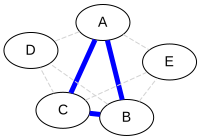
Failures are indistinguishable
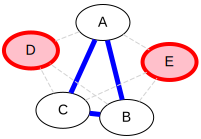
Too many failures, no quorum
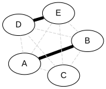
Simple quorum isn't enough
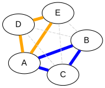
Back to reality
- CAP's C is linearizability
- CAP's A is ops on any node
- These are very strong guarantees!
Gradations

Reality
- Many consistency models (real & theoretical)
- Many levels of availability (0-100%)
- No reason to sacrifice either outside of failures
- Systems can choose what to sacrifice (A vs C)
Example of creative sacrifice: etcd
- Normally: consistency all the way
- Option of doing inconsistent reads
- Maybe get some stale data
- … but still works if the cluster is on fire!
What lives in those gray areas?
Trade-offs
| Availability | Consistency |
| Performance | Ease of reasoning |
| Availability | Transactionality |
| Scalability | Guarantees |
High availability can be OK…
Stats, aggregates…
- Counting Twitter followers: can be stale
- Average e-mail size: OK if you miss a few
Doesn't need to be strongly consistent
Consistency models
One process, one register
Two processes, one register
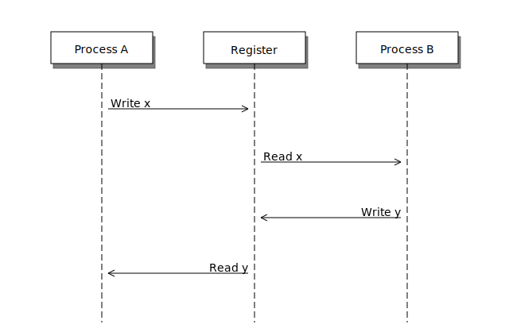
This is how we expect stuff to work
(We are a spoiled bunch)
Information travels at c
Slow stuff can overlap
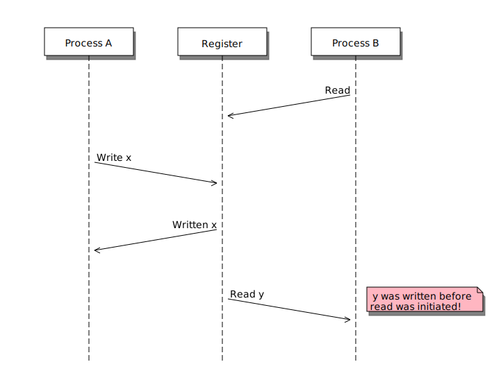
Writes don't replicate instantly
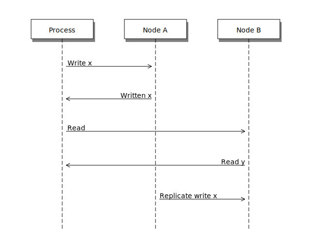
Writes can get reordered
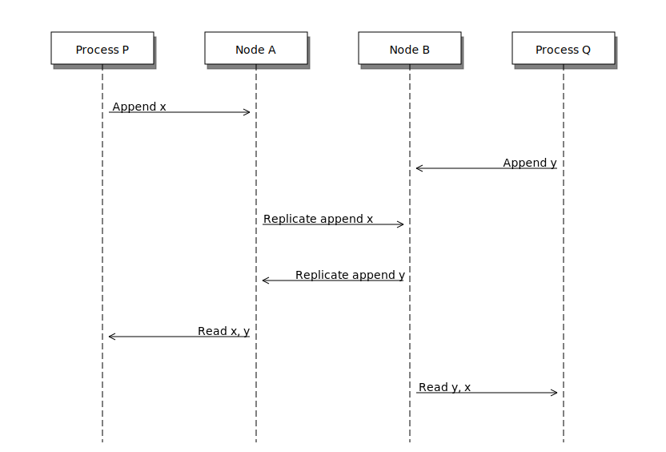
All sorts of stuff can happen
- Only get worse!
- Multiple registers, semantics, nodes, failure modes…
- E.g. SQL transactions
- Phantom reads (the rows change)
- Non-repeatable reads (a row changes)
Reasoning about the system
- What can and can't happen?
- What can happen: consistency model
Theoretical consistency models
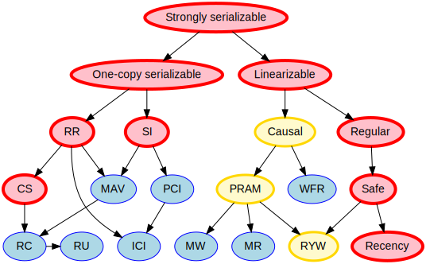
Serializability
- ∃ serial execution with the same result
- Some serial execution: fairly weak
- No restrictions on which one
Example: serializability being weak
Precondition: x = 0
- x ← 0
- x ← 1
- x ← 2
Example: serializability being strong
Precondition: x = y = 0
- y ← 2, assuming y = 1
- x ← 1, assuming x = 0
- y ← x, assuming x = 1
Linearizability
All operations appear to happen instantly
Strong serializability
- Linearizable & serializable
- There is a serial execution …
- … and that execution is unique & matches wallclock time (???)
Your computer is distributed
Models in "centralized" systems
- SQL databases
- Clojure reftypes
Twisted vs threads
In terms of concurrency models
- Twisted: strongly serializable
- Event loop with 1 reactor thread
- Serializable: reactor finds the ordering
- Linearizable: callbacks run by themselves
- Threads: no defined model
- Unladen Swallow tried to figure it out
- Nothing fancy; whatever your CPU gives you
- Probably okay (heap + GIL)
- Correct use of locks?
Time
What do we do with time?
Global clock model
Global clock
- Everyone sees the same clock
- Access instant, uncertainty 0
- Can compare different timestamps
- Mental model: wallclock
Local clock model
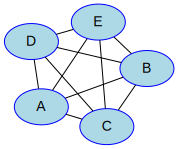
Local clocks
- Each clock is kinda reliable
- Can't compare with other timestamps
- Mental model: stopwatch
No clock model
Can't have a global clock
- Can pretend they almost exist
- Going to be wrong often
Example: Google Spanner
- GPS & atomic clocks
- "Atomic clocks […] drift significantly"
- "uncertainty […] generally <10ms"
Time is a proxy
Actual timestamp vs total order
Vector clocks
Good news
Stuff you can rely on
Queues
Consensus protocols
Examples
- ZAB (Zookeeper)
- Paxos* (Chubby)
- Raft (
etcd)
Recipes
On top of consensus protocols:
- Set partitioning
- Locks
- Barriers
- …
Set partitioning
{1, 2, 3, 4, 5}
Failures
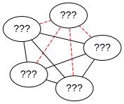
Recovery

CRDTs
- Conflict-free
- Replicated
- Data
- Type
Problem
- Read, compute, write back
- Concurrency: multiple results
- Conflicts!
Solutions?
- Last write wins? Some write loses :-(
- Coordination? Expensive! :-(
I want highly available data stores…
.. but I don't want nonsense data
Idea!
- Describe what you want
- Describe conflict resolution
Specializations
The C in CRDT can mean:
- Commutative (CmRDT)
- Convergent (CvRDT)
Commutative RDTs
- Broadcast operations
- Merge operation:
- Commutative: f(x, y) = f(y, x)
- Not idempotent f(x, y) != f(f(x, y), y)
Example: integers
- +1, -2, +3, +5, -4: +3
- Always get same answer:
- As long as I see all ops once
- Duplicate an op, get wrong answer
- Order doesn't matter, though
Convergent RDTs
- Broadcast states
- Merge operation has many properties:
- Commutative: f(x, y) = f(y, x)
- Idempotent: f(x, y) = f(f(x, y), y)
- Associative: f(f(x, y), z) = f(x, f(y, z))
- Informally: apply lots until done
Simple CvRDT conflict resolution
Complex CvRDT conflict resolution
It's okay if you see writes more than once!
CRDTs in practice: usually CvRDT
Solve local problem once
vs
Solve distributed problem constantly
Examples
- Counters (G, PN)
- Sets (G, 2P, LWW, PN, OR)
- Maps (sets of (k, v) tuples)
- Graphs (using multiple sets)
- Registers (LWW, MV)
- Sequences (continuous, RGA)
Using CRDTs
- Designing them is tricky
- Using them is fairly easy
Riak <3
Flags, registers, counters, sets, maps
Wrap-up
Yay, distributed systems!
- More resilient
- More performant
- Make problems tractable
Argh, distributed systems!
- Incredibly hard to reason about
- Huge state space, no repeat scenarios
- Expensive to operate
Lots of distributed systems
- Everything is about tradeoffs
- Figure out what's right for your app
- Don't build what's on the shelf
Why distributed systems?
Because you're out of options.